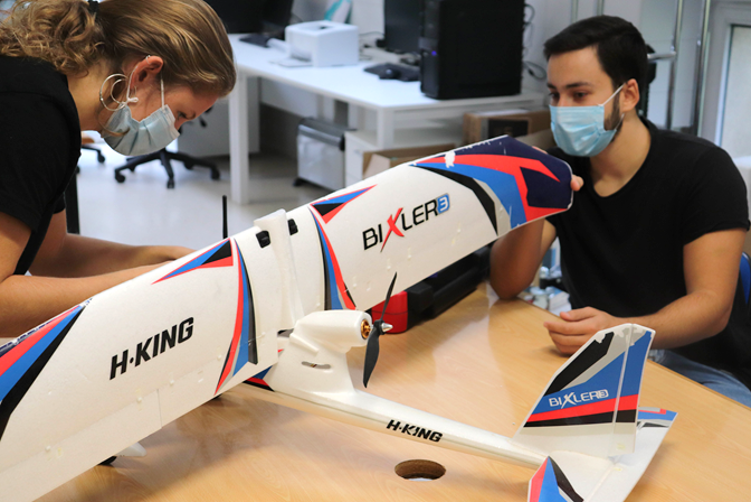
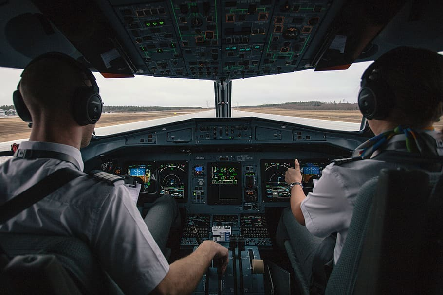
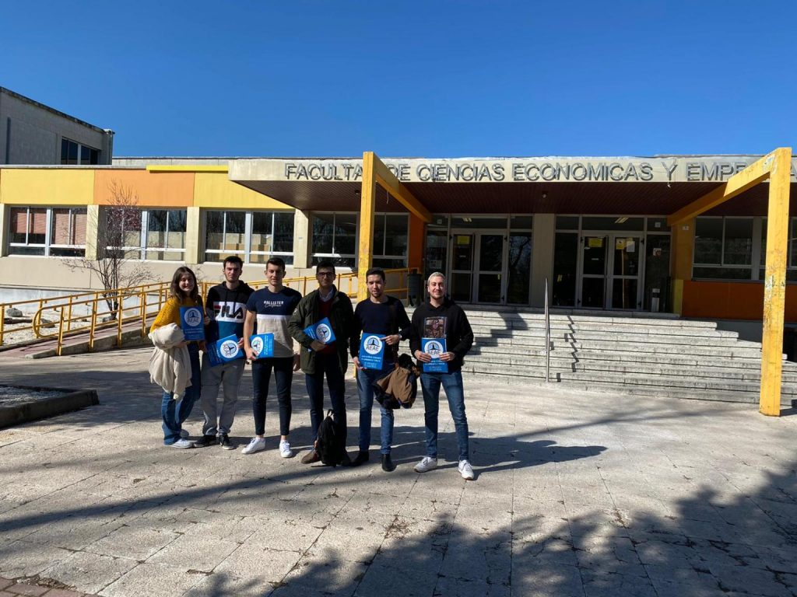

XV Aniversario

La AEAE anima al estudiantado de bachillerato a elegir el sector aeroespacial tras la selectividad

La Asociación de Estudiantes de Aeronáutica y Espacio, AEAE, después de la finalización del periodo de celebración de los exámenes de acceso a la universidad en todas las comunidades autónomas, anima a los y las estudiantes que los acaban de realizar a elegir los grados del ámbito de la aeronáutica y del espacio. Desde la Asociación insisten que estas titulaciones son garantía de buenas perspectivas laborales, y más ante el periodo de reindustrialización que se está abriendo en nuestro país a consecuencia de la recuperación después de la pandemia. Por otro lado, los y las estudiantes universitarios del sector aeroespacial exponen que este es uno de los sectores en los que la investigación es más importante. “Muchos de los grandes inventos que hoy utilizamos en el día a día provienen de soluciones materiales a problemas del ámbito aeroespacial”, recuerdan desde la asociación. “Aún hay un mundo por descubrir y miles de problemáticas que aparecerán progresivamente para el cual los futuros ingenieros e ingenieras tendrán que pensar soluciones”, insisten. Además, desde la Asociación hacen un especial llamamiento a las jóvenes, recordando que, a pesar de que en los últimos años la presencia de la mujer en los ámbitos universitarios técnicos ha aumentado, es necesario que se continúe con la senda de progreso a través de los caminos que muchas ingenieras han creado rompiendo numerosos techos de cristal en el sector, explican. Por último, la AEAE recuerda que está a disposición de todo el estudiantado para resolver todas las dudas que tengan sobre los estudios del sector aeronáutico y espacial, pudiendo contactar con ellos a través de sus redes sociales, página web o correo electrónico.
León acogerá el XXV Congreso de la AEAE

La Asociación de Estudiantes de Aeronáutica y Espacio, la AEAE, celebrará su XXV Congreso en León. Le elección de sede se efectuó en la última Asamblea General Ordinaria de la Asociación, en el marco de su XXIV Congreso, que tuvo lugar en Madrid los días 21, 22 y 23 de octubre. La candidatura de sede fue presentada por los representantes de la Delegación de la Escuela de Ingenierías Industrial, Informática y Aeroespacial de la Universidad de León.El Congreso de Madrid fue el primero celebrado de forma presencial desde el inicio de la pandemia. Este, que tuvo lugar de forma exitosa, contó con representación de delegaciones estudiantiles de múltiples partes de la geografía española, que pudieron participar en diversas actividades como ponencias y mesas redondas retransmitidas en streaming para el resto del estudiantado. En la Asamblea General Ordinaria se llevó a cabo una renovación de la Comisión Ejecutiva Ampliada. La Asociación destaca que la elección de los nuevos cargos fue aprobada por unanimidad y agradece la labor de los miembros salientes.La AEAE agradece la presencia en su último Congreso de la compañía aeroespacial española GMV, las startups Plus Ultra, IENAI Space y Radian Systems, el COIAE, el Colegio Oficial de Ingenieros Aeronáuticos de España, y el profesorado de la Universidad Politécnica de Madrid y de la Universidad Carlos III de Madrid.En estos momentos, la AEAE tiene la vista puesta en el XXV Congreso de León, que tendrá lugar en el mes de febrero de 2022 y se llevará a cabo conjuntamente con la Reunión de Estudiantes de Ingenierías Técnicas y Superiores en Informática (RITSI).Como novedad, la AEAE celebrará también sus Jornadas de Formación (las primeras presenciales desde el inicio de la pandemia), enmarcadas en una nueva estrategia comunicativa que viene desarrollando en los últimos meses para poder llegar de una forma más efectiva al estudiantado, aseguran.
El Aeromodelismo, más que un deporte.

El Aeromodelismo es una actividad que combina la técnica de construcción con el vuelo de aeroplanos de pequeño tamaño preparados para volar sin tripulación, generalmente con fin deportivo. El principal objetivo del aeromodelismo es diseñar, construir y operar aviones a escala siguiendo el proceso habitual que hoy en día sigue el sector aeronáutico. Estos pueden ser réplicas de otros ya existentes, diseños de prueba para futuros aviones reales o, como en UVigo Aerotech, diseñados exclusivamente para el aeromodelismo. En este ámbito es sencillo distinguir dos facetas esenciales: la científica, más cercana al mundo de la ingeniería, y la deportiva. El área científica comprende el estudio de la aerodinámica y la mecánica, el diseño y proyecto de modelos de aviones y su construcción, como si se tratase de una aeronave a escala comercial. Por su parte, la parte deportiva consiste en hacer volar a estos aviones de distintas formas, según el tipo de aeromodelo de que se trate: vuelo libre, vuelo circular, radiocontrol, indoor o FPV. Los aspectos científico y deportivo del aeromodelismo deben ir siempre de la mano si uno quiere lograr un buen resultado. UVigo Aerotech, un proyecto de la Universidad de Vigo. UVigo Aerotech surgió en enero del 2020, constituido inicialmente por 18 alumnos del grado de Ingeniería Aeroespacial de la Universidad de Vigo. Es el único equipo de aeromodelismo universitario de Galicia, el cual está formado íntegramente por alumnos. Esta temporada, entraron al equipo nuevos estudiantes del Campus de Ourense, de forma que el equipo pasa a estar formado por 23 estudiantes de ingeniería aeroespacial e ingeniería informática. Durante la temporada pasada, su objetivo fue diseñar y fabricar su primer prototipo, pero debido a la situación sanitaria no pudieron construirlo, así que se centraron más en la fase de diseño. De esta forma, sacaron adelante su primer diseño: el AZOR-0. Para esta próxima temporada, si la situación sanitaria lo permite, el objetivo de UVigo Aerotech es participar en la Air Cargo Challenge 2021. Esta competición se basa en los principios de la ingeniería aeronáutica y estará evaluada por jueces representantes de empresas, y profesores de la Universidad de Munich, ya que se celebrará en Alemania el año que viene. La competición valora tanto pruebas dinámicas como la altura y velocidad del vuelo, así como el diseño de la aeronave. UVigo Aerotech se organiza en 5 departamentos de trabajo: El departamento de aerodinámica, el cual se encarga de diseñar y simular todos los elementos aerodinámicos de la aeronave y dimensionarlos adecuadamente para que el avión levante la carga necesaria. El departamento de estructuras es el encargado de diseñar y simular toda la estructura interna de la aeronave; además, gestiona la fabricación trabajando con materiales compuestos como la fibra de carbono e impresión 3D. El departamento de electrónica y control se ocupa de diseñar e implementar los circuitos y los elementos electrónicos, así como los mecanismos para mover las superficies de control. Además, se encarga de programar la controladora. El departamento de organización y márketing, es el cual gestiona el soporte económico del proyecto contactando con empresas de ingeniería para administrar los patrocinios, así como gestionar la imagen externa del equipo en redes, congresos… El departamento de propulsión y dinámica, se encarga de diseñar y simular tanto la bancada del motor para conseguir una transmisión de potencia segura, como los trenes de aterrizaje trasero y delantero. A pesar de lo reciente que es el proyecto, UVigo Aerotech cuenta con el apoyo de varias empresas del tejido industrial gallego entre las cuales destacan Marine Instruments, la Escuela de Ingeniería Aeronáutica y del Espacio de la Universidad de Vigo, Mecadis, Dosmasdos y Rdc Works entre otras. ¡Síguelos en las redes sociales del equipo y visita su página web! https://uvigoaerotech.com/
Estudio sobre el impacto del Covid-19 en las Universidades

Desde la AEAE queremos saber cómo se ha gestionado desde vuestras Universidades la crisis del COVID, es por ello que remitimos un formulario para poder ver la evolución en estos meses. Este formulario lleva menos de dos minutos para hacer y es de manera totalmente anonima. Muchas gracias por vuestra colaboración. https://docs.google.com/forms/d/1AOlOA-3Hcp29A3MfaVTLo5jKDDt8ToCB0XM9el1WAdU/edit?usp=sharing
¿Fue el Vuelo 9525 de Germanwings un accidente?

Ya han pasado más de cinco años desde aquel fatídico 24 de Marzo de 2015 en el que un Airbus A320-211 partió del aeropuerto de Barcelona-El Prat con destino Düsseldorf, aunque nunca consiguió llegar. Todos las personas a bordo del avión, 144 pasajeros, 22 pilotos y 4 miembros de la tripulación, fallecieron ese día. Las causas de este aciago suceso no tardaron en conocerse y debido al interés informativo que provoca cualquier acontecimiento relacionado con la aviación a día de hoy todo el mundo ha oído hablar del por qué del mismo: el copiloto estrelló de forma deliberada el avión en los Alpes. Aunque nadie duda de que el Vuelo 9525 ha sido una de las mayores catástrofes de la aviación, las condiciones particulares del mismo lo convierten en un muy buen ejemplo para comparar la forma en la que diferentes organizaciones aeronáuticas definen qué es un accidente. Con el fin de responder a la pregunta del titular vamos a comparar las estadísticas oficiales de accidentes de cinco organizaciones diferentes que publican estos datos y deberían incluir, o no, el Vuelo 9525. El primer organismo analizado es la BEA (la Agencia Gubernamental Francesa encargada de la investigación de accidentes) ya que el accidente ocurrió en suelo francés, es esta agencia nacional la que debería reflejarlo en sus estadísticas y analizando los informes publicados podemos asegurar que sí se categoriza como accidente y las víctimas mortales de este vuelo aparecen en sus estadísticas. Otro organismo con dependencia gubernamental, en este caso a nivel europeo, la EASA también incluye a las víctimas mortales del Vuelo 9525 en sus estadísticas anuales y por ende lo trata como un accidente más. En cuanto al último organismo dependiente de gobiernos analizado, en este caso a nivel mundial, de nuevo concuerda con EASA y BEA y lo categoriza como accidente y lo incluye en sus informes y estadísticas sobre accidentes acaecidos ese año. Sin embargo, no solo entidades relacionadas con los gobiernos publican anualmente informes y estadísticas sobre accidentes aéreos los fabricantes como AIRBUS o Boeing o la IATA publican sus propias estadísticas. Comenzando con la Asociación Internacional de Transporte Aéreo en su Safety Report 2015 indica expresamente que el vuelo de Germanwings no se incluye en sus estadísticas por no cumplir sus criterios para considerarse como tal. En cuanto al fabricante AIRBUS los datos no son concluyentes, en su informe solo reflejan que se haya producido un accidente mortal ese año que afectase a aeronaves fabricadas por esta compañía mientras que en el informe de OACI se reflejan tres eventos mortales con aeronaves AIRBUS involucradas (Metrojet, Air India y Germanwings) y además en el propio informe no incluyen los criterios de definición de accidente. No obstante, comparando con Boeing si un accidente como este se hubiera producido en una aeronave de la empresa estadounidense no se habría contabilizado ya que se excluyen eventos provocados por personas. Además IATA de los tres eventos mortales contabilizados por OACI excluye también el de Metrojet por lo que todo parece indicar que el único accidente mortal contabilizado por Airbus ese año no es el vuelo 9525 de Germanwings. En conclusión, a día de hoy no existe una consenso para definir qué criterios debe cumplir un accidente para considerarse como tal y por ende incluirse en las estadísticas e informes de seguridad operacional. Sí que es verdad que todos los entes con relación gubernamental lo incluyen en sus informes anuales y lo tratan como tal. Sin embargo, existen organizaciones que con los criterios que establecen no lo incluyen en sus estadísticas de accidentes mortales. Las posibles razones de estas diferencias pueden ser muy variadas, por ejemplo a los fabricantes puede no interesarles incluir accidentes que no se hayan producido por fallos suyos de forma que sus índices de seguridad operacional no se encuentren mermados por hechos que ellos mismos no han cometido y no pueden controlar. Por otro lado, la divergencia en las estadísticas de accidentes aéreos no acaba con la definición de accidente sino que es solo el comienzo. Cada organismo, y en este caso no hay consenso ni entre entes con relación gubernamental, establece sus propios parámetros y condiciones para calcular tasas de accidentalidad lo que hace muy complicado poder establecer comparaciones.
Entrenando a los pilotos del futuro

¿Qué es el entrenamiento EBT (Evidence Based Training)? Este sistema es la manera más novedosa de instruir a los pilotos con el fin de aumentar la seguridad aérea Tradicionalmente, la industria aeronáutica ha tenido la necesidad de anteponer la seguridad a cualquier otra variable de la operación, la cual guarda un minucioso equilibrio con la rentabilidad económica de los operadores. Esta preocupación, unida a la creciente tecnología que incorporamos en nuestras aeronaves, han permitido que las cifras de accidentes con pérdidas de fuselaje se cifren en 1.08 por millón de sectores para miembros de la IATA (International Air Transport Association). IATA plantea la estrategia SAFETY en materia de seguridad, la cual establece los siguientes objetivos: reducir riesgos operacionales, mejorar la calidad y cumplimiento de los operadores, mejora de la infraestructura, promocionar la implementación de SMSs (Safety Management Systems), el reclutamiento y entrenamiento efectivo y la identificación de riesgos. En este contexto, en el año 2013 se publica una nueva propuesta de la mano de la ICAO (International Civil Aviation Organization) con el documento ICAO Doc. 9995, en el cual se establecen las bases para la implementación de un nuevo sistema de entrenamiento, el Evidence Based Training (EBT). Este entrenamiento parte de la premisa de que la mayoría de los accidentes que se registran ocurren con aeronaves en situaciones imprevistas, como ocurrió con el incidente de Quantas 32 en 2010, o United 1549 en 2009; en los cuales la tripulación se enfrentaba a situaciones nunca antes previstas. Este planteamiento llevó a la conclusión de que el entrenamiento basado en requisitos o Compliance Based Training que se utilizaba (en el cual una serie de maniobras se le requerían a la tripulación en sus comprobaciones periódicas) no tenía por qué garantizar el éxito en una situación imprevista. Así nace la propuesta del entrenamiento por competencias (CBTA), en el cual se plantean una serie de competencias que el piloto debe demostrar y las cuales se establecen en función de la operación a realizar (por ejemplo, un piloto de línea necesitará habilidades en el manejo de automatismos, mientras que un instructor de vuelo necesitará habilidades docentes). Estas competencias se pueden demostrar en diferentes escenarios; una vez entrenadas y demostradas son transferibles a otras situaciones de emergencia que las requieran.De este modo las diferentes permutaciones que puede sufrir el contexto en el que se desarrolla la emergencia pueden ser gestionadas en tiempo real mediante la aplicación de dichas competencias. ICAO argumenta en su documento 9995 que la recolección de datos (evidencias) en aeronaves comerciales en los últimos 20 años, mediante grabadoras de datos de vuelo (FDR) y programas de análisis de dichos datos (FDM), ha permitido la definición de las competencias necesarias, así como los escenarios con los cual entrenarlas en simuladores de vuelo aprobados (FSTD). Estos datos reflejan problemas en la seguridad y los clasifican según su gravedad, recurrencia y beneficio de entrenamiento. Las competencias genéricas para pilotos de línea según ICAO son: Aplicación de procedimientos Comunicación, manejo del vuelo automático Manejo del vuelo manual Liderazgo y trabajo en equipo Solución de problemas y toma de decisiones Conciencia situacional y manejo de la carga de trabajo El Programa de Entrenamiento El entrenamiento para obtener y demostrar estas competencias está integrado en el entrenamiento recurrente de las tripulaciones y consta de tres fases: Fase de evaluación: la tripulación realiza un vuelo de examen en el que se detectan las competencias más débiles. Fase de maniobras: esta fase busca el entrenamiento de las habilidades motoras necesarias para la gestión de una emergencia, como es el vuelo asimétrico o aterrizajes con viento cruzado. En esta fase el instructor abandona su posición de evaluador previa para adoptar un papel de facilitador con la tripulación. No obstante, registrará el desempeño en las competencias de esta. Fase de entrenamiento por escenario: esta etapa utiliza la alta fidelidad que proporcionan los simuladores actuales para simular diferentes escenarios de operación normal en los que se pongan a prueba unas competencias específicas en las que se haya demostrado peor desempaño durante el entrenamiento. Estos escenarios deben generarse a través de la continua recolección de datos para la aeronave específica. Una vez el alumno se demuestra competente, esa competencia se considera adquirida y se espera su aplicación en cualquier otra situación que la requiera. ICAO plantea en función de la generación de la aeronave una serie de escenarios de base con los que aplicar este entrenamiento (véase figura 3), obtenidos de los datos publicados por IATA en el IATA Data report for Evidence Based Training. Finalmente, en este programa cambia la perspectiva a la hora de evaluar estas competencias. Previamente, las competencias referidas a la parte técnica del manejo del avión se evaluaban como aptas/no aptas y se ofrecía la opción de repetir una maniobra. Con el EBT se busca hallar el origen que ha causado el fallo en la maniobra para entrenarlo y corregirlo. Asimismo, las competencias no pueden ser evaluadas de forma subjetiva, sino que esta evaluación se realiza mediante el registro de marcadores de comportamientos favorables. La Implantación Las filosofías del EBT y CBTA requieren de una implantación gradual y auto mejorada hasta que se consigan recolectar todas las evidencias que demuestren su efectividad en el contexto de un operador. No obstante, tras la publicación por la European Aviation Safety Agency (EASA) en 2015 de su guía de implementación EBT estableciendo un marco regulatorio, diferentes aerolíneas europeas han implementado ya el sistema formando a instructores y alumnos y avanzan en el esfuerzo de personalizar estos programas de entrenamiento a su operación. Asimismo, el objetivo final de este entrenamiento por competencias es su integración en todos los programas de obtención de licencias, demostrándose todos los pilotos nuevamente formados competentes no en la realización de una serie de maniobras, sino en las características que necesitarán para afrontar las nuevas situaciones que se les planteen. Autor: Gabriel Pérez Belda, Piloto de aviación comercial (CPL) y estudiante del Grado en Piloto de Aviación Comercial y Operaciones Aéreas en al Universidad de Salamanca.
Día Internacional de los Vuelos Espaciales Tripulados
El primer vuelo espacial tripulado cumple 59 años, hazaña realizada por el astronauta ruso Yuri Gagarin el 12 de abril de 1961, día en el que se abrió el camino a la exploración del espacio y fue el comienzo de la era espacial representando uno de los más grandes avances tecnológicos del siglo XX. El 7 de abril de 2011, la Asamblea General de las Naciones Unidas declaró este día como Día Internacional de los Vuelos Espaciales Tripulados reafirmando lo importantes que son la ciencia y la tecnología espaciales, su contribución en los objetivos de desarrollo sostenible, el aumento del bienestar de los Estados, así como asegurar que se cumpla la aspiración de reservar el espacio ultraterrestre a fines pacíficos y mantenerlo como patrimonio de toda la humanidad. Asimismo, coincide con el aniversario del lanzamiento del primer transbordador espacial, que ocurrió justo en el 20 aniversario del vuelo de Gagarin, el 12 de abril de 1981. Razón por la cual este día es también conocido como «La Noche de Yuri» celebrada en más de 34 países con más de 75 eventos individuales cuyo objetivo es aumentar el interés de los ciudadanos por la exploración del espacio y fomentar una cultura comprometida con esta causa, incluyendo diversas disciplinas. «La noche de Yuri» se celebró por primera vez el 12 de abril de 2001, si bien su equivalente, conocido como el Día de la Cosmonáutica en Rusia, se celebra desde 1962 en lo que entonces era la Unión Soviética. Antecedentes y Primer Vuelo Tripulado Los vuelos espaciales pasaron a formar parte de los logros de la humanidad en el siglo XX, después de los avances teóricos y prácticos llevados a cabo por Konstantin Tsiolkovsky y Robert H. Goddard. El 4 de Octubre de 1957 se produjo el lanzamiento del primer satélite construido por el ser humano, Sputnik 1, hecho que abrió el camino a la exploración espacial. Horas más tarde, se lanzó Sputnik 2 y en ella viajó Laika, la perra que se convirtió en el primer animal en llegar al espacio. El 12 de abril de 1961, Yuri Gagarin, piloto de la fuerza aérea soviética, despegó en el Vostok 1 (la primera nave espacial del mundo con un hombre a bordo), de Baykonur convirtiéndose con 27 años en el primer ser humano en viajar al espacio y completar una órbita alrededor de la Tierra. Siendo la duración aquel viaje de 108 minutos. Durante el vuelo espacial se llevaron a cabo sencillos experimentos, tales como beber, comer o escribir con un lápiz. Reacciones, sensaciones y observaciones registradas en una grabadora de a bordo, con el fin de analizar cómo puede desenvolverse el ser humano en gravedad cero. Fue aquí, cuando otra de sus frases quedó para la posteridad: “La Tierra es azul”. Durante el descenso, debido a la sobrecarga ejercida sobre la nave y los casi 5.000º C que podría alcanzarse en el exterior, se produjo un momento de tensión y estrés psicológico, ya que la cabina empezó a crepitar. A 7 km de distancia al suelo, y según se había programado en el plan de vuelo, Yuri Gagarin se catapultó, cayendo en dirección al agua helada del río Volga. Gracias a las maniobras entrenadas previamente, logró desviarse a 2 km de distancia de él. Eventos Posteriores y Actualidad La primera mujer (Valentina Tereshkova) que orbitó la Tierra el 16 de junio de 1963 a bordo del Vostok 6 El primer astronauta (Aleksei Leonov) en realizar un “paseo espacial” en 1965, desde Vosjod 2. El primer hombre en pisar la Luna el 20 de julio del 1969, a bordo del Apolo 11, tripulación formada por Neil Armstrong, Edwin “Buzz” Aldrin y Michael Collins. Así como el resto de misiones Apolo siendo la 17 la última. El acoplamiento de las naves Apolo y Soyuz el 17 de julio 1975 proyecto conjunto entre EEUU y URSS. En él se logró el primer acoplamiento entre dos naves en el espacio, con el significativo apretón de manos internacional que realizaron Thomas Sttaford, cosmonáuta estadounidense, y Alexei Leonov, cosmonáuta soviético, a través de la escotilla de la Soyuz siendo la primera misión humana internacional en el espacio. La última década de presencia humana multinacional permanente en el espacio a bordo de la ISS (International Space Station). Donde agencias como la NASA, la ESA y el ROSCOSMOS colaboran en diversos experimentos. Objetivos Futuros La NASA enviará a la primera mujer y al siguiente hombre al Polo Sur lunar en 2024. Están buscando hombres y mujeres talentosos de diversos orígenes y de todos los ámbitos de la vida para unirse a esta nueva era de exploración humana que se inicia con el programa Artemis a la Luna. La aceptación de las solicitudes de futuros astronautas aspirantes a exploradores de la Luna o Marte comenzó el lunes 2 de marzo de 2020 y finalizará a mediados de 2021, fecha en la que comenzarán el entrenamiento como la próxima promoción de astronautas de la generación Artemis. Universidades con Proyectos y Actividades relacionados con el Espacio Universidad Carlos III En STAR (Student Team for Aerospace and Rocketry) somos una asociación de estudiantes de ingeniería de la Universidad Carlos III de Madrid, fundada en 2018 con el objetivo de promocionar la cohetería en nuestro entorno universitario, y realizar proyectos dedicados al área de aeroespacial. Estamos constantemente en búsqueda de aplicar nuestros conocimientos adquiridos en el aula de clases, en situaciones de la vida real. Nuestra creatividad es infinita, y qué mejor área para aprovecharla, que en el espacio. Nos motiva trabajar en proyectos donde las posibilidades son ilimitadas, donde podemos literalmente dejar nuestras ideas volar. El espacio es el lugar en donde se han desarrollado las más avanzadas tecnologías, donde se ha llevado la ingeniería y la inteligencia humana al límite y es el lugar en donde se rompen las barreras de lo que se piensa como posible. Pero no solo eso, el espacio es el lugar que nos llena de inspiración y nos hace pensar en lo que somos capaces de
XXI Congreso AEAE // XLVIII Congreso CREII

Aplazamiento del XXI Congreso AEAE y XLVIII Congreso CREII Dada la situación actual del coronavirus, en la última reunión, los miembros de AEAE y CREII llegamos a la conclusión del siguiente comunicado. El Consejo de Representantes de Estudiantes de Ingeniería Industrial, junto con la Asociación de Estudiantes de Aeronáutica y Espacio, tras haber mantenido de manera extraordinaria una reuión el 17 de marzo a las 17:00 horas, ambas Comisiones Ejecutivas han decidido aplazar la celebración del XXI Congreso AEAE y XLVIII Congreso CREII. La decisión ha sido tomada por totalidad de los miembros presentes debido a las recomendaciones de las autoridades sanitarias. Tanto CREII como AEAE, continuarán trabajando de forma telemática, como viene siendo habitual en los periodos interasamblearios. Dicho trabajo no se verá comprometido por esta extraordinaria situación, y seguiremos contando con el programa de patrocinios vigente durante este periodo. La celebración del Congreso se comunicará a todos los miembros con el tiempo suficiente y según indica la normativa de las dos Asociaciones. En caso de que la convocatoria se dilate en el tiempo, se hará coincidir con el congreso de otoño. Si se diera esta situación, las elecciones previstas quedarán pospuestas y los cargos pendientes de elección se, mantendrán en funciones para garantizar el funcionamiento de las Asociaciones. Agradecemos el esfuerzo de todas las delegaciones, así como su compromiso de continuar con el trabajo que tenemos pendiente, a pesar de las dificultades.
Reuniones con delegaciones de la Comunidad de Madrid

Hemos empezado nuestra ronda de contactos con las sedes de Madrid, esta vez con una sede que aún no se ha adherido a nuestra Asociación, la Universidad Autónoma de Madrid con su Grado en Gestión Aeronáutica. En la reunión se ha comentado qué es la AEAE y los valores de nuestra Asociación. Se ha destacado la importancia de la transversalidad y la unión de distintos sectores profesionales en el mundo aeronáutico y cómo ello debe favorecerse desde la formación. Por ello, la AEAE en su apuesta por aunar al máximo número de titulaciones que tengan relación con el sector aeronáutico ha comentado a la Delegación de la UAM sus intenciones de su adhesión aportando así una visión más holística. Está Delegación estará presente en el próximo Congreso de la AEAE donde se valorará su adhesión. Continuando con los contactos con sedes hemos retomado la comunicación con la Universidad Rey Juan Carlos. En esta reunión hemos explicado a su Delegación qué hacemos en la AEAE, el rumbo puesto por la actual ejecutiva, así como los planes de organización para el próximo Congreso. Además, nuestros compañeros de la Universidad Carlos III de Madrid nos han acompañado para poder explicar también de primera mano la labor de la Asociación y como ésta les ha ayudado a la hora de afianzar contactos con otras universidades y así tener un conocimiento global de las Titulaciones Aeroespaciales a nivel nacional. Finalmente se han comentado asuntos de preocupación por el estudiantado como la docencia y su implantación, los programas de seguimiento de calidad y los programas de prácticas. Respecto a esto último, se elaborará en el próximo Congreso un posicionamiento al respecto para expresar la opinión de los estudiantes en esta importante materia. Finalmente, nos hemos desplazado hasta la Universidad Politécnica de Madrid con el fin de compartir una visión con nuestros compañeros de la delegación de dicha Facultad. Reunión en la que se pudieron debatir diferentes aspectos del panorama actual, así como trazar varias líneas en común para el próximo XXI Congreso. Dicho congreso se celebrará del 15 al 19 de abril en la Escuela de Ingeniería, Arte y Diseño de la Universidad Europea de Madrid, coincidiendo con el X Aniversario de la Asociación. Ante dicho esperado evento, se ha invitado activamente a que todos los estudiantes participen ya que supone un punto de encuentro para valorar el trabajo realizado en esta década. Agradecemos la asistencia numerosa de los miembros de esta delegación, así como la de todas las Facultades que, desinteresadamente, nos abrieron sus puertas para albergar este proyecto como es la AEAE.